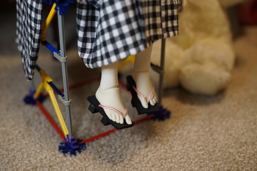

my wrist is still recovering from the dandelion massacre that occurred last week. i really overdid it guys... it's so hard to avoid using your wrist on your dominant hand and theres really not much you can do other than watch movies and read.
my neighbor is moving out so he gave me one of his old monitors. its 24 in so its smaller than my 27 in but... it doesnt flicker or have splotchy marks in the corner. thank the lord. i've been using that d*nged thing for almost 10 years now. my uncle bought it for me in 2012 when my previous monitor kicked the bucket and he saved some cash buying refurbished. it was definitely refurbished.
there's a lot of confusion about "refurbished". a lot of people think it means "used", but it actually means the dang thing was broken already and someone fixed it. i'm sure you can guess it will probably break again. dont buy it. its a trick. find something only "used"
i'm not entirely sure what to do with my old monitor though. it still works, even if not well. i dont want to donate it and have the next owner pay $25 for it to randomly start flickering after they turn it on next week. All sales are final at the place i donate to. maybe a free craigslist ad with a full disclosure would be better idk. i dont want to trash something that someone could still use.

I tried making some geta out of mousepad foam and trim. maybe ill find some wood for the next try, but this is what i had sitting around today. the foam doesnt collapse under her weight but these are definitely sitting shoes. i can't get her to stand at all. i also already lost one of them and had to have ryan help me find it :')
if any of you or none of you are still on the edge of your seats about the volksusa resolution i mentioned a bit back, here it is: the feet are noticeably more yellow than the hands i recieved (and hina for that matter) so i emailed volksusa and showed them the pictures. they weren't able to offer me an exchange for more recently made pair, but did offer me a refund with a prepaid shipping label. i chose to keep the feet instead of refunding them, so i guess ill call this transaction neutral. i really would have liked to own tabi feet made close to the same year as my doll, but ill just have to deal with them being slightly yellower. I still am not happy volksusa is selling aged stock as new for full price.
these feet are definitely not pretty. the toe gap looks super weird without shoes on. they remind me of people with uncomfortably large gaps between their front two teeth.
I'm still pleased with the choice of hands i ordered. I was between getting H-04, which is my favorite of the available hands, or H-07, the chubbier version that match H-01 hands better. I decided to get my favorite and I haven't put the H-01 hands back on Hina since. The only reason to change them is to put the silly pointing finger and peace sign hands on for funsies. But in all honesty, H-04 and H-01 do not look out of place together on the same doll. H-01 is just... boring.
i was surfing through plasticdino's links and found "killed by google" which says google chrome apps are being discontinued in june. excuse me?! how am i supposed to use line on linux now??